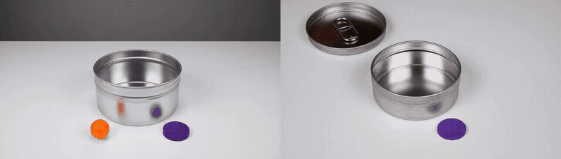
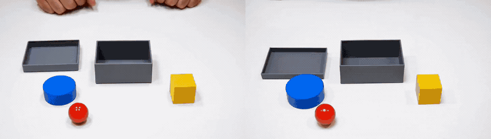
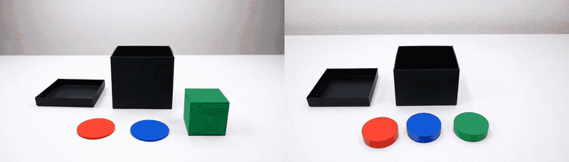

R0-03 · worked case
Orange marble, tin, purple disk
The raw take opens the tin onto another object. The revision keeps the tin, the disk, and the order, and puts the orange marble inside.
RawRevised

Execution before memory
Three selected clips. Left is the raw take. Right is the revised instruction. These are not the full 43, and keeping the better clip is an oracle.

Filtered to the pairs whose last frame makes the missing move obvious. Raw stays on the left so a worse revision would still be visible.
The raw take opens the tin onto another object. The revision keeps the tin, the disk, and the order, and puts the orange marble inside.

The raw take leaves the lid closed. The revision opens it onto the blue disk and the yellow cube. The red marble stays outside.

The raw take lifts the lid onto an empty box. The revision shows the token that was supposed to be inside.
